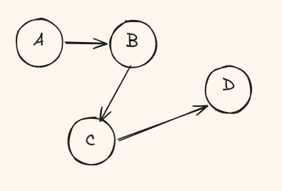

This is a new blog series where I will try to unpack the ecosystem across pytorch and pytorch compile. Ive always wanted an excuse to dig deep and find out why and how torch does what it does and how excellently it does this. Hopefully by the end of the blog series, you will have a deeper understanding of how pytorch 2.0 ecosystem works and are able to debug programs more comfortably.
What is even a FX graph?
What's a FX graph? Why should I care? I want to read torch.compile and skip this boring graphs.
Bad news! understanding fx graphs are fundamental to understanding every other components of the compile ecosystem. From dynamo to inductor, each of them make use of fx graph in some way or the other. Good news! Im going to unpack everything in one blog!
FX Graph is an intermediate representation (IR) provided by a PyTorch module that transforms Python code into a directed acyclic graph (DAG).
The good ol' DAGs
DAGs stands for Directed Acyclic Graph that is basically made up on nodes and directed edges. the directed means every node is pointing to another node that has a meaning
Here's a cool DAG
